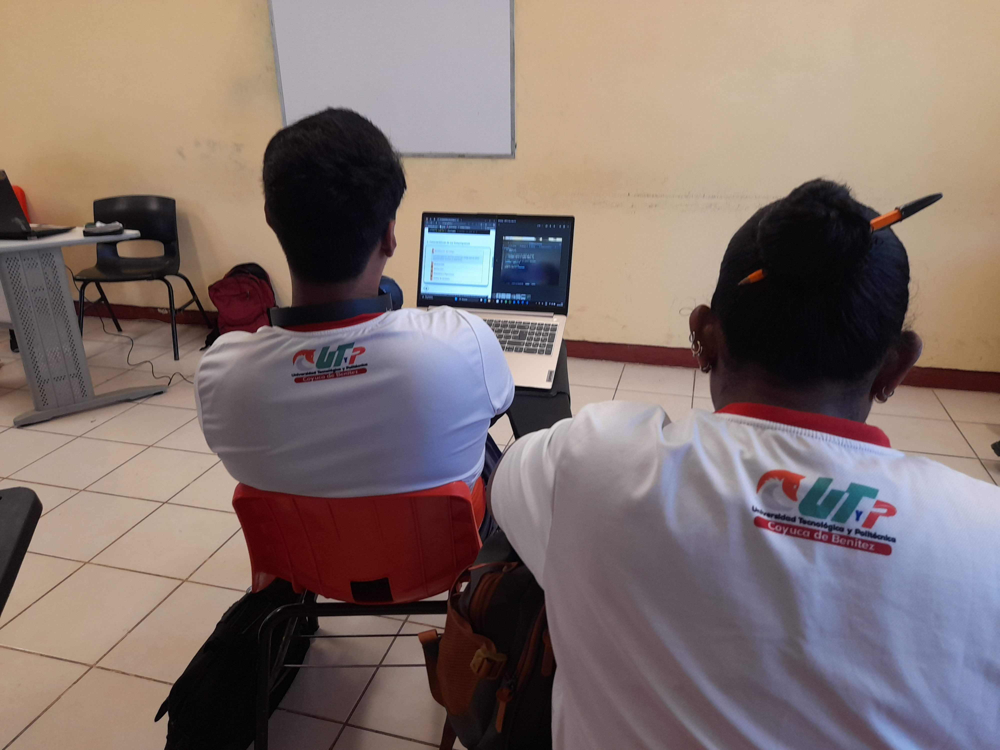

Relevancia:
La diversidad de estilos de aprendizaje y necesidades educativas en el ámbito universitario requiere soluciones inclusivas que garanticen equidad y calidad en la educación.
Impacto esperado:
Mejorar la accesibilidad, el rendimiento académico y la satisfacción de los estudiantes, especialmente aquellos con discapacidades o necesidades específicas.
Innovación:
Uso de eXeLearning como herramienta para crear recursos digitales alineados con el DUA, promoviendo la inclusión y la personalización del aprendizaje.
